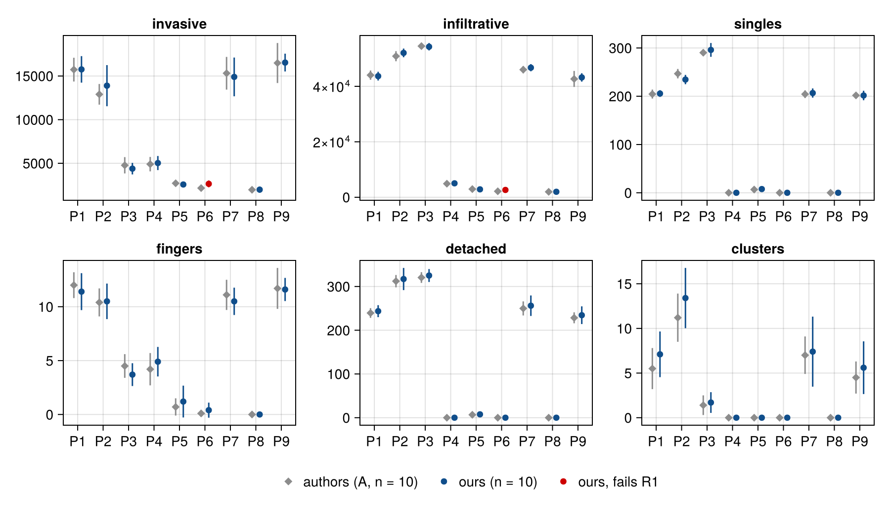
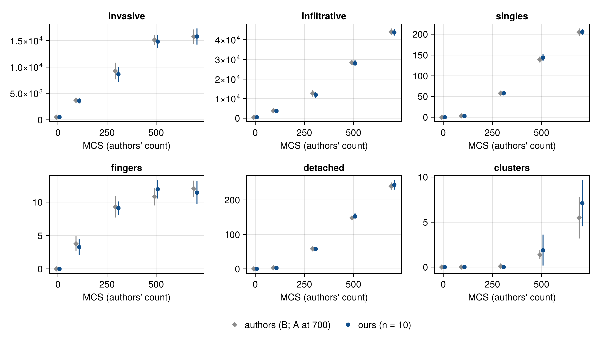
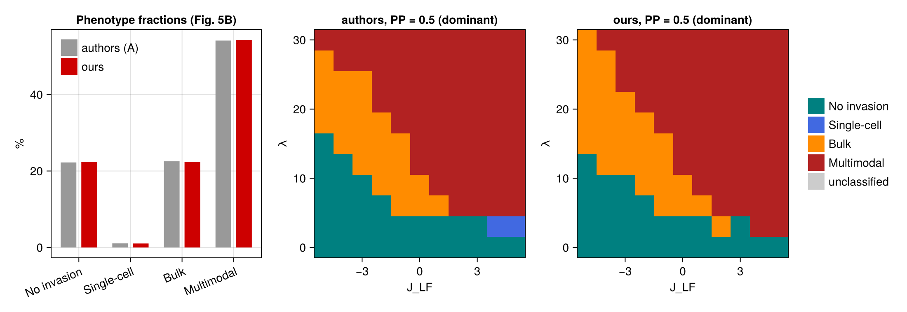
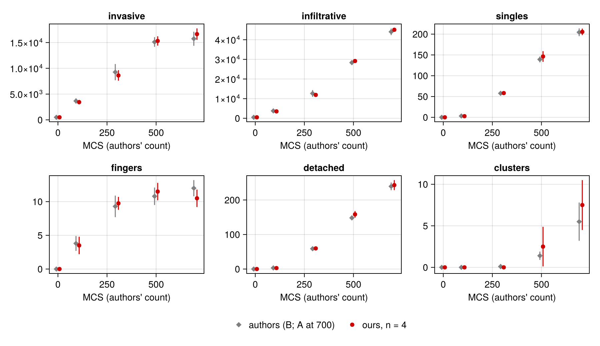
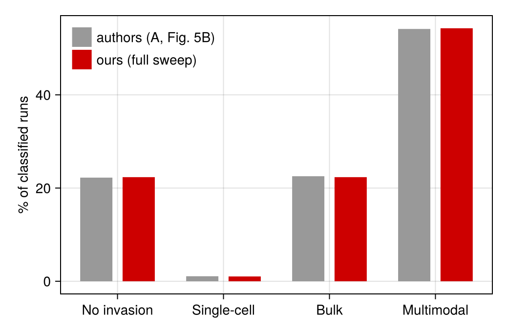

Akeeb, Marcus & Jiang (2026): leader–follower tumour invasion
In many carcinomas a minority of leader cells climbs cues in the matrix and pulls a majority of follower cells behind it.
- S. Akeeb, A.I. Marcus, Y. Jiang, "Clusters, fingers, and singles: A mechanical landscape of tumor invasion", PLoS Comput. Biol. 22(9), e1014747 (2026), doi:10.1371/journal.pcbi.1014747.
The paper grows a slab of followers seeded with one-site leaders, and maps how three parameters set the invasion pattern: leader–follower adhesion J_LF, leader chemotaxis λ and the proliferating fraction PP. The four patterns are no invasion, single cells, fingers of the bulk, and several modes at once with detached clusters. PottsModels ships the model as AkeebInvasion.
The page shows, in order:
- the model code;
- a minimal run you can paste;
- the results against the paper and the authors' released data: the key figures, the full-run videos, a verdict summary and the table of deviations;
- the details, collapsed: protocol, every verdict, the sweeps and provenance.
Every result in §3 comes from the committed full run lib/PottsModels/reproductions/data/10/full-2026-10-07/. It holds 9 parameter points × 10 runs, the PP = 0.5 slice (1210 runs) and a separate 13,310-run sweep of the whole (J_LF, λ, PP) grid. Every pre-registered target passes except V-A2 at the no-invasion point P6, where our invasive area is 23 % above the authors' reference (one deviation, read as sampling in the reference value).
using Potts, PottsModels
using MakiePotts, CairoMakie
using Statistics: mean, std
using Markdown
CairoMakie.activate!(type = "png")
const FULL = get(ENV, "POTTS_FULL_REPRODUCTION", "false") == "true"1. The model
The energy is the paper's Eq. (1): contact energies between kinds, an area constraint towards a per-cell target, and a cue that leaders climb. Where the authors' released CompuCell3D code differs from the text, the model follows the code, because the paper's numbers come from it (the deviations table in §3 lists each case).
@potts_model AkeebInvasion begin
@structural_parameters begin
lattice = (500, 300) # sites; 1 site ≈ 2.5 µm
end
@kinds medium leader follower
@parameters begin
λᵥ = 2.0 # area constraint (Table 1)
μ = 24.0 # leader chemotaxis, the paper's λ
T = 10.0
V_max = 20.0 # growth cap and division size
clock_min = 75.0 # division gate: clock > 75 + 50 U
clock_spread = 50.0
J[kind, kind] = [0.0 2.0 10.0; 2.0 16.0 2.0; 10.0 2.0 5.0] # J_LF = 2; scan with akeeb_contacts
end
@variables begin
V_target(cell) = 10.0
clock(cell) = -1.0 # −1: the cell never divides
rate(cell) = 0.0 # target growth per MCS (followers 0.015)
cue(site) = 0.0 # c(x, y) = y − 1, set by akeeb_state
end
# x periodic, y a closed wall; contacts over 8 neighbours, copies from the 4 nearest
@lattice Lattice(lattice; boundary = (Periodic(), Closed()), neighborhood = Moore(1))
@relations proposal = VonNeumann(1)
@energy begin
cells => λᵥ * (volume - V_target)^2
contacts => J[kind, kind′]
end
# CompuCell3D's chemotaxis: any copy that a leader gains or loses climbs the cue
@drive copy => ifelse((kind[new] == leader) || (kind[old] == leader), -μ * (cue[target] - cue[source]), 0.0)
@constraint connectivity(leader, follower) # cells stay in one piece
@constraint no_extinction
@after_mcs begin
V_target ~ ifelse(Pre(V_target) < V_max, Pre(V_target) + rate, Pre(V_target))
clock ~ ifelse(Pre(clock) >= 0, Pre(clock) + 1, Pre(clock))
end
# a fresh uniform draw every MCS, as in the authors' code
@divide cells(follower) when = (clock >= 0) && (volume > V_max) && (clock > clock_min + clock_spread * rand()),
along = RandomPlane(), V_target => Split(), clock => 0.0
@sweep Metropolis(; temperature = T)
endAkeebInvasion (generic function with 1 method)This listing is the shipped constructor. Both compile to the same code and give the same run, cell for cell:
let small = akeeb_state(; lattice = (99, 60)), alg = SequentialCPM(; proposal = VonNeumann(1))
run(M) = solve(PottsProblem(M(; name = :akeeb, lattice = (99, 60)), small, (0, 701); capacity = 1000, seed = 7), alg)
a, b = run(AkeebInvasion), run(PottsModels.AkeebInvasion)
ownership(a.u[end]) == ownership(b.u[end]) && a.stats.lifecycle.divisions == b.stats.lifecycle.divisions > 0
endtrue2. A minimal run
The authors' reference sample (adhesion 2, chemotaxis 24, PP = 0.5) from the published start: a 500 × 21 slab of 3 × 3 followers with one-site leaders inserted until they are a quarter of all cells. The authors' "MCS 700" is our state after 701 MCS (§4). akeeb_observables measures a state as the authors' analysis code does.
@named akeeb = AkeebInvasion()
prob = PottsProblem(akeeb, akeeb_state(; seed = 1), (0, 701); capacity = 4000, seed = 1)
sol = solve(prob, SequentialCPM(; proposal = VonNeumann(1)))
akeeb_observables(sol.u[end])(invasive = 16254.5, infiltrative = 43563.0, singles = 195, fingers = 9, detached = 219, clusters = 4, cluster_leaders = [3, 4, 2, 3], cluster_followers = [1, 3, 2, 1])To scan, remake the problem with a contact table and a chemotaxis strength, for example remake(prob; p = [:J => akeeb_contacts(-2.0), :μ => 15.0]) for the bulk point of the paper's Fig. 4, and set PP with akeeb_state(; pp).
3. Results
Authors' values are dataset A (Data/invasion_metrics.csv of the authors' release, 10 runs per point at MCS 700) and dataset B (an independent sweep with snapshots every 100 MCS). Ours are the committed full run, 10 runs per point.
Key figures against the paper
Per-point statistics (V-A2, V-A7). The six metrics at MCS 700 at the nine pre-registered points: P1–P3 multimodal, P4 bulk, P5 single-cell, P6 no invasion, and the controls P7 (PP = 0), P8 (λ = 0) and P9 (PP = 1). Mean ± SD; a red point fails rule R1.

Time course at the reference point P1 (V-A0, V-A11). The authors' snapshots (dataset B, mean ± SD of 10 runs; MCS 700 from A) beside ours at the same snapshots.

Phenotypes over the whole sweep (V-A6; the paper's Fig. 5B). Left: the fractions of the four phenotypes over all 13,310 runs, ours against the authors' dataset A, by the same area-equality classifier (provisional; deviations table). Middle and right: the dominant phenotype at each (J_LF, λ) of the PP = 0.5 plane, authors and ours. The figure is committed with the record (analyse.jl).

The full-run videos
Replicate 1 at each phenotype point of the paper's Fig. 4, 500 × 300, 701 MCS, every 10 MCS. Leaders are red and followers green, coloured by type on a white matrix, without cell outlines. P6 is the failing point.
The files are on the pre-release reproductions-2026-10-07-akeeb.
Verdicts at a glance
124 PASS, 2 FAIL, 2 PARKED, 1 reported. The two FAIL rows are one deviation: at P6 no cell detaches, so invasive and infiltrative area are the same quantity.
| Target | Checks | Rows | Result |
|---|---|---|---|
| μ default | default λ = 24 | 1 | all PASS |
| V-A0 | front after one sweep | 7 | all PASS |
| V-A1 | inventory, leaders, divisions | 3 | all PASS |
| V-A2 | six metrics at P1–P8 | 48 | 46 PASS, 2 FAIL |
| V-A7 | PP barely matters (P9; full-sweep r) | 12 | all PASS |
| V-A11 | time course at P1 | 18 | all PASS |
| V-A8 | cluster composition | 3 | 2 PASS, 1 PARKED |
| V-A3 | fingers, singles, clusters over the PP = 0.5 slice | 9 | all PASS |
| V-A4 | invasive and infiltrative over the slice; order; ratios | 10 | all PASS |
| V-A5 | cluster incidence and size | 3 | all PASS |
| V-C1 | PP = 0 control | 2 | all PASS |
| V-C2 | λ = 0 control | 6 | all PASS |
| per-run invariants | infiltrative ≥ invasive, detached ≥ singles | 1 | all PASS |
| V-A9 | leader speed | 1 | 1 PARKED |
| V-A10 | morphology (videos) | 1 | 1 reported |
| V-A6 | phenotype fractions, full sweep | 4 | all PASS |
Headline rows:
| Target | Authors / paper | Ours | Tolerance | Result |
|---|---|---|---|---|
| V-A2 P6 invasive | 2155 ± 261 (A) | 2642.0 ± 392.0 (n = 10) | ± 447.0 | FAIL |
| V-A2 P6 infiltrative | 2155 ± 261 (A) | 2642.0 ± 392.0 (n = 10) | ± 447.0 | FAIL |
| V-A2 P1 invasive | 15734 ± 1362 (A) | 15762.0 ± 1519.0 (n = 10) | ± 1935.0 | PASS |
| V-A1 (c) divisions by MCS 700 | 578 (one sample run) | 588.0 ± 23.88 (n = 10) | ± 55 | PASS |
| V-A4 order of invasive area | [−1, 2] > (> 2) > (≤ −2) | 10368.0 > 6556.0 > 5459.0 | strict | PASS |
| V-A5 cluster incidence, all | 0.283 (N = 1209) | 0.28 (N = 1210) | R3 | PASS |
| V-A6 Multimodal fraction | 54 % (p.13); A 54.14 % (N = 13263), Fig. 5B 54.14 ± 0.48 % | 54.29 % (N = 13268); per replicate 54.29 ± 0.394 % | R3 | PASS |
| V-A7 r(PP, invasive), full sweep | |r| < 0.03 (p.10–11); A -0.025 | -0.027 | |r| < 0.05 | PASS |
| V-C2 λ = 0: no cluster | 0 in all 1209 λ = 0 runs (A) | max 0.0 | 0 in every run | PASS |
Every row, with its tolerance, is in the Details.
Deviations
One row per failed, parked or provisional target and per difference from the paper or the released code (D-154). The columns are our value, the paper's value (with the released code's where it differs), the suspected cause and the status of the question to the authors: "not an author question", "not asked" (the question is on our open question list, spec 10 §7 and model-specs README §5; Details), "asked on ⟨date⟩" or "answered → ⟨D-entry⟩". Source keys: S = the authors' Python steppables, X = their CC3D XML (spec 10 §1).
| Item | Ours | Paper | Suspected cause | Author question |
|---|---|---|---|---|
| V-A2 P6 (−2, 6, 0.5) invasive = infiltrative (FAIL, full run) | 2642.0 ± 392.0 (n = 10); the same point in the full sweep (other seeds): 2426 ± 487 (n = 10), in band (R1); pooled over all 11 PP at (−2, 6): 2487 ± 426 (n = 110) | 2155 ± 261 (A), tolerance ± 447.0; A pooled over all 11 PP at (−2, 6): 2381 ± 383 (n = 110) | reference sampling: A's PP = 0.5 cell is low against A's own (−2, 6) runs, and PP does not matter (V-A7); pooled, ours is 4.5 % above A, inside the 10 % floor. Both FAIL rows of the full run are this one deviation: at P6 invasive and infiltrative are the same quantity (no detached cells) | not an author question |
| V-A6 phenotype fractions (provisional classifier; PASS, full sweep) | 22.34 / 1.03 / 22.34 / 54.29 % (N = 13268 classified runs) | 22 / 1 / 23 / 54 % (p.13, Fig. 5B) | provisional: the area-equality classifier (akeeb_phenotype), identified from the released notebooks as the one behind Fig. 5B and S1 Table; Fig. 5A uses a fingers/singles/clusters rule (spec 10 §5.3.5). The paper does not say. R3's floor of 5 percentage points means the Single-cell row (≈ 1 %) cannot fail: it is a check on the other three | not asked (on our open question list: spec 10 §7 q1; README §5) |
| V-A8 (paper) cluster composition (PARKED) | V-A8 binds on the released cluster_data.csv instead: P1 4.75 (SD 2.89, 71 clusters); 0.59, P2 5.22 (SD 3.43, 134 clusters); 0.52 (PASS, PASS, full run) | mean ≈ 7 cells, 60–70 % leaders, median 4 L / 3 F (p.14–17); the released cluster tables give ≈ 4.6 cells and 55 % leaders | the subset or weighting behind the paper's values is not stated | not asked (on our open question list: spec 10 §7 q8; README §5) |
| V-A9 leader speed (PARKED) | not run (no measurement to reproduce) | 0.4 px/MCS at λ = 20 (p.6) | no definition, code or data | not asked (on our open question list: spec 10 §7 q6; README §5) |
| Chemotaxis term (D6) | the code: CC3D Merks ΔH = −λ[c(tgt) − c(src)] if the new or old cell is a leader | absolute potential −λ Σ c(x) over leader sites, Eq. (1) | the paper's numbers come from the code (D-050 A3; spec 10 §2.1) | not asked (on our open question list: spec 10 §7 q2; README §5) |
| Leader creation (D1) | the code: new one-site leaders inserted into followers until 25 % of the inventory (akeeb_state, S:64–75); planned variant leaders = :reassign (D-050 A1) | 25 % of the followers "reassigned" (p.5) | the 1559 cells in the authors' files come from the code (spec 10 §4 #23) | not an author question |
| Missed seeding draws (MD-1) | the authors' count (≈ 382 painted of 390 counted), no ghost cell allocated; variant akeeb_state(; seeding = :retry) paints exactly 390 | — (code: a draw on a leader leaves an empty "ghost" leader in the inventory, S:68–75) | emulates the released code (D-068; spec 10 §5.3.6) | not asked (on our open question list: spec 10 §7 q7; README §5) |
| Division timer (D3) | the code: clock > 75 + U{0…49}, redrawn every MCS (S:143–146) | one U(25, 125) draw per cycle (p.6) | the paper's numbers come from the code (D-050 A2) | not an author question |
| Competent followers (D4) | the code: Bernoulli(PP) per follower (S:131) | a subset of size PP × N_FC (p.6) | the paper's numbers come from the code (spec 10 §2.4) | not an author question |
| Growth (D5) | the code: every follower grows while its target is below 20 (S:113–115) | f_grow only (Table 1) | the paper's numbers come from the code (spec 10 §2.4) | not an author question |
| Connectivity (D7) | a hard constraint, plus no extinction | not mentioned (code: penalty 10⁵ on copies that break the losing cell's 8-ring arc, X:29–31) | e^(−10⁴) at T = 10: the soft penalty is never paid; the plugin also protects one-site cells (spec 10 §7.1 P2) | not an author question |
| Closed bottom edge (D7) | ring positions off the lattice read as nothing | not mentioned (code: CompuCell3D reads ring positions off the lattice as the cell at pixel (0, 0, 0)) | a CompuCell3D source artefact we do not reproduce; suspected small, affects bottom-wall cells only; unmeasured | not an author question |
| Metrics (D12–D17) | the code (akeeb_observables, spec 10 §5.3.3 O1–O8): per-column areas above the lowest main top; no spline; distance = 10 then merge > 15; singles = leaders only; FC-seeded clusters (S:458–671); planned: paper-definition observables (D-050 A4) | invasive area = main-tumour volume; infiltrative = convex hull; spline-smoothed front; fingers ≥ 20 px apart; singles of either kind; leader-only satellites counted | the paper's numbers reproduce only from the code's quantities (spec 10 §7 D12) | not asked (on our open question list: spec 10 §7 q5; README §5) |
| Main-tumour seed row (D19) | the code: x ∈ 1:499, y = 2 (1-based; S:496, x ∈ 0…498) | all cells at y = 1 (p.7) | negligible | not an author question |
| Time (A6) | 701 MCS, read as the authors' 700 | 700 MCS (p.4); code: 701 steps, sweep first (X:15) | settled by the authors' MCS-0 data (spec 10 §5.3.2) | not an author question |
| μ default (A5) | 24 (μ keyword) | λ = 24 for the sample; code 24 (S:25) | none (D-050 A5, D-142) | not an author question |
| RNG (D11) | StableRNG layouts, counter-based Potts streams; seeds listed in the Details (seed) | seeds 0–9 (p.6); the code sets no seed | ensemble agreement only (D-029) | not an author question |
| CC3D version (D9) | CC3D 4.6.0 semantics | 4.6.0 (p.3); XML header 4.3.1 (X:1) | which release produced the runs (spec 10 §7) | not asked (on our open question list: spec 10 §7 q3; README §5) |
4. Details
Protocol, every verdict, the sweeps and provenance (click to open)
The docs build runs a reduced ensemble (POTTS_FULL_REPRODUCTION unset): 4 runs at the reference point and 2 at each control point. Only the rows of class SMOKE+FULL carry a verdict there; the tables below are a smoke check, not validation. The full run (POTTS_FULL_REPRODUCTION=true) runs the spec's ensembles: 10 runs at each of nine parameter points and 10 at each of the 121 points of the PP = 0.5 slice. The committed full-run record is lib/PottsModels/reproductions/data/10/full-2026-10-07/ (P6.2d, D-146: verdicts, time series, provenance). It holds the page at FULL and a separate 13,310-run sweep of the whole (J_LF, λ, PP) grid for V-A6 and the full-sweep form of V-A7; "The full run" below reads its verdicts from there.
Paper and sources
- S. Akeeb, A.I. Marcus, Y. Jiang, "Clusters, fingers, and singles: A mechanical landscape of tumor invasion", PLoS Comput. Biol. 22(9), e1014747 (2026). doi:10.1371/journal.pcbi.1014747. Read in the version of record (24 pp.). Erratum status: none known; not checked against the journal's correction notices.
- Released code and data:
https://github.com/Jiang-Lab/Leader_Follower_Invasion_Modelat commit0b9673faa736b2ee54bb200142546ade9e841093(21 Nov 2025). The model isImplementation/Main_Simulation_Scan/cclc_math_path/Simulation/(CCIecm.xml,CCIecmSteppables.py,CCIecm.py; cited as X:, S: and P: with line numbers). The paper gives a second URL (Tumor_Invasion_Model, p.7), not read (spec 10 §1). - The authors' data, which this page is validated against (spec 10 §5.3.1):
- A,
Data/invasion_metrics.csv: 13,310 runs of the full scan (11 J_LF × 11 λ × 11 PP × 10 replicates; 5 rows blank), metrics at MCS 700. The paper's text numbers come from A. - B,
Data/Invasion_Metrics_By_MCS/invasion_metrics_{0..700}_mcs.csv: an independent sweep with snapshots every 100 MCS. - C,
Data/NEW/: a third independent sweep, with per-cluster compositions (cluster_data.csv).
- A,
- Spec:
docs/design/research/model-specs/10_akeeb_invasion.md(§2 mechanics, §5 validation targets, §5.3 the pre-registration audit, §7 paper–code differences). - Reproducibility grade: A. The CompuCell3D XML and steppables are released, and so is the full sweep output (model-specs README §1).
The paper maps how leader–follower adhesion J_LF, leader chemotaxis λ and the proliferation fraction PP decide how a slab of cells invades: not at all, as single cells, as fingers of the bulk, or in several modes at once with detached clusters. This page reproduces the per-point ensemble statistics of the authors' own runs at nine parameter points, the time course at the reference point, the sweep-level marginals of the PP = 0.5 slice, the cluster compositions, and two negative controls (no proliferation, no chemotaxis).
The model, term by term
Eq. (1), p.4:
\[H = \sum_{\langle i,j\rangle} J(\tau(\sigma_i), \tau(\sigma_j))\,(1 - \delta_{\sigma_i\sigma_j}) + \sum_\sigma \lambda_V (V_\sigma - V_{T,\sigma})^2 - \sum_x \lambda\, c(x)\,\delta_{\sigma(x),\mathrm{LC}}\]
The released code implements the third term as CompuCell3D's default (Merks) chemotaxis, not as written (spec 10 §2.1, D6). The model follows the code:
| Paper / code | AkeebInvasion statement |
|---|---|
contact term, 8 neighbours (<NeighborOrder>2</NeighborOrder>, X:59) | contacts => J[kind, kind′] on Lattice((500, 300); boundary = (Periodic(), Closed()), neighborhood = Moore(1)) |
| volume term, λ_V = 2, target 10 (S:86–88) | cells => λᵥ * (volume - V_target)^2 |
chemotaxis: ΔH = −λ[c(target) − c(source)] when the copying or the replaced cell is a leader (CC3D 4.6.0 ChemotaxisPlugin, X:66–73) | @drive copy => ifelse((kind[new] == leader) || (kind[old] == leader), -μ * (cue[target] - cue[source]), 0.0) |
| static cue c(x, y) = y (S:78–83; p.6) | the per-site variable cue, set to y − 1 by akeeb_state (1-based) |
Connectivity penalty 10⁵ (X:29–31), which also keeps one-site cells alive | @constraint connectivity(leader, follower) and @constraint no_extinction |
copies from the 4 nearest neighbours (<NeighborOrder>1</NeighborOrder>, X:17) | @relations proposal = VonNeumann(1) |
| Metropolis at T = 10, Eq. (2), p.4 | @sweep Metropolis(; temperature = T) |
| followers' target grows 0.015 per MCS while below 20 (S:111–115) | @after_mcs V_target ~ ifelse(Pre(V_target) < V_max, Pre(V_target) + rate, Pre(V_target)) |
| clock +1 per MCS; divide when volume > 20 and clock > 75 + U{0…49}, redrawn every MCS (S:136–147) | @after_mcs clock ~ … and @divide cells(follower) when = … (clock > clock_min + clock_spread * rand()) |
| random division plane; target halved, clocks reset (S:151–163) | along = RandomPlane(), V_target => Split(), clock => 0.0 |
The authors' 2D XMLs set the connectivity <Penalty> to 10⁵, which CompuCell3D 4.3.1 and 4.6.0 honour, so it acts as a veto at T = 10; CompuCell3D 4.7.0 and later ignore the value and use a hard-coded 64, so re-running the XML on current CompuCell3D gives a soft penalty of about 1.7 × 10⁻³ acceptance per violation at T = 10.
The published constructor carries the defaults; the scan parameters J_LF, λ and PP are set per run:
base = PottsProblem(PottsModels.AkeebInvasion(; name = :akeeb), akeeb_state(; seed = 1), (0, 701); capacity = 4000, seed = 1)
par(name) = getp(base, name)(base)
J = par(:J)
Markdown.parse("""
| Symbol | Value | Units | Meaning | Source | Status |
|---|---|---|---|---|---|
| lattice | 500 × 300, x periodic, y closed | sites (1 site ≈ 2.5 µm) | domain | p.4, Table 1; X:14, X:18–19 | stated (y wall: code only) |
| T | $(par(:T)) | energy | temperature | Table 1; X:16 | stated |
| `J_ML`, `J_MF` | $(J[1, 2]), $(J[1, 3]) | energy | medium–leader, medium–follower | Table 1; X:53, X:56 | stated |
| `J_LL`, `J_FF` | $(J[2, 2]), $(J[3, 3]) | energy | leader–leader, follower–follower | Table 1; X:55, X:57 | stated |
| J_LF | $(J[2, 3]) (default); scanned over −5…5 | energy | leader–follower adhesion | p.6, Table 1; S:37 | stated |
| λ_V | $(par(:λᵥ)) | energy / site² | volume constraint | p.6, Table 1; S:88 | stated |
| V_T (start) | 10 | sites | target volume | p.6, Table 1; S:87 | stated |
| λ (`μ`) | $(par(:μ)) (default); scanned over 0, 3, …, 30 | energy / site | leader chemotaxis | p.6, Table 1; S:25, S:38 | stated; default 24 = the reference sample (D-050 A5, D-142) |
| f_grow | 0.015 | sites / MCS | follower target growth while < V_max | Table 1; S:20, S:111–115 | rate stated; cap and "all followers" code only |
| V_max | $(par(:V_max)) | sites | growth cap and division size | p.6; S:113, S:143 | stated |
| clock gate | > $(par(:clock_min)) + $(par(:clock_spread)) U, fresh U each MCS | MCS | division timer | S:143–146 (paper: U(25, 125), p.6) | code (D3) |
| PP | 0.5 (default); scanned over 0…1 | — | P(follower has a clock), per follower | p.6, Table 1; S:131 | stated (paper: a fixed-size subset, D4) |
| leaders | 25 % of the counted inventory | — | one-site leaders inserted into followers | p.5; S:64–75 | code (D1, MD-1) |
| duration | 701 sweeps, measured as "MCS 700" | MCS | — | p.4, p.7; X:15 | stated; mapping from the data (spec 10 §5.3.2) |
""")| Symbol | Value | Units | Meaning | Source | Status |
|---|---|---|---|---|---|
| lattice | 500 × 300, x periodic, y closed | sites (1 site ≈ 2.5 µm) | domain | p.4, Table 1; X:14, X:18–19 | stated (y wall: code only) |
| T | 10.0 | energy | temperature | Table 1; X:16 | stated |
J_ML, J_MF | 2.0, 10.0 | energy | medium–leader, medium–follower | Table 1; X:53, X:56 | stated |
J_LL, J_FF | 16.0, 5.0 | energy | leader–leader, follower–follower | Table 1; X:55, X:57 | stated |
| J_LF | 2.0 (default); scanned over −5…5 | energy | leader–follower adhesion | p.6, Table 1; S:37 | stated |
| λ_V | 2.0 | energy / site² | volume constraint | p.6, Table 1; S:88 | stated |
| V_T (start) | 10 | sites | target volume | p.6, Table 1; S:87 | stated |
λ (μ) | 24.0 (default); scanned over 0, 3, …, 30 | energy / site | leader chemotaxis | p.6, Table 1; S:25, S:38 | stated; default 24 = the reference sample (D-050 A5, D-142) |
| f_grow | 0.015 | sites / MCS | follower target growth while < V_max | Table 1; S:20, S:111–115 | rate stated; cap and "all followers" code only |
| V_max | 20.0 | sites | growth cap and division size | p.6; S:113, S:143 | stated |
| clock gate | > 75.0 + 50.0 U, fresh U each MCS | MCS | division timer | S:143–146 (paper: U(25, 125), p.6) | code (D3) |
| PP | 0.5 (default); scanned over 0…1 | — | P(follower has a clock), per follower | p.6, Table 1; S:131 | stated (paper: a fixed-size subset, D4) |
| leaders | 25 % of the counted inventory | — | one-site leaders inserted into followers | p.5; S:64–75 | code (D1, MD-1) |
| duration | 701 sweeps, measured as "MCS 700" | MCS | — | p.4, p.7; X:15 | stated; mapping from the data (spec 10 §5.3.2) |
Units and time. Lengths are lattice sites, areas are px² (the paper's µm² are px² × 6.25). One MCS is N copy attempts, N the number of sites, as in CompuCell3D (p.4). Each CompuCell3D step is a sweep followed by growth and division, and the authors' "MCS t" snapshot comes after t + 1 sweeps: its MCS-0 invasive area is never 0 in 13,310 runs, though the start is flat (spec 10 §2.2, §5.3.2). So the authors' MCS t is our state after t + 1 MCS, and every comparison below follows that rule.
ours(t) = t + 1 # our MCS for the authors' snapshot tBuild and run
One run at the reference point (J_LF, λ, PP) = (2, 24, 0.5), the authors' sample run, for 701 MCS on the CPU, timed after a warm-up:
alg = SequentialCPM(; proposal = VonNeumann(1))
run_prob(point, seed; tmax = 701) = remake(base; u0 = akeeb_state(; pp = point[3], seed),
p = [:μ => point[2], :J => akeeb_contacts(point[1])], seed, tspan = (0, tmax))
solve(run_prob((2.0, 24.0, 0.5), 1; tmax = 2), alg) # warm-up (compilation)
t_one = @elapsed sol_one = solve(run_prob((2.0, 24.0, 0.5), 1), alg)
const MACHINE = "$(strip(Sys.cpu_info()[1].model)) ($(Sys.MACHINE)), CPU backend, one thread"
Markdown.parse("One run, 500 × 300, 701 MCS, `SequentialCPM`: " *
"**$(round(t_one; digits = 1)) s** on $MACHINE ($(sol_one.stats.lifecycle.divisions) divisions).")One run, 500 × 300, 701 MCS, SequentialCPM: 3.2 s on AMD RYZEN AI MAX+ 395 w/ Radeon 8060S (x86_64-linux-gnu), CPU backend, one thread (592 divisions).
The scan is ordinary parameter remake: a contact table and a chemotaxis strength per point. The bulk point (−2, 15, 0.5) of the paper's Fig. 4, and the variant seeding that paints the full 390 leaders:
prob_bulk = remake(base; p = [:J => akeeb_contacts(-2.0), :μ => 15.0])
op_retry = akeeb_state(; seeding = :retry)
count(==(:leader), op_retry[2].second), count(==(:leader), akeeb_state()[2].second)(390, 383)Measurement (spec 10 §5.3.3, O1–O8)
akeeb_observables(u) is the authors' metric code at one state: the main tumour is the set of cells connected (by von Neumann contacts, x periodic) to the cells in the authors' row y = 1 (our y = 2); the invasive and infiltrative areas integrate the per-column tops of the main tumour and of any cell above the main tumour's lowest top; fingers are SciPy 1.7 find_peaks(prominence = 10, distance = 10, width = 5) on the main-tumour profile followed by the authors' merge (PottsModels.Analysis, D-069, D-073); singles are leaders with no neighbour above the main tumour's lowest cell centroid; detached cells are all cells outside the main tumour above that line; clusters are components outside the main tumour of at least two cells with at least one follower.
akeeb_observables(sol_one.u[end])(invasive = 16254.5, infiltrative = 43563.0, singles = 195, fingers = 9, detached = 219, clusters = 4, cluster_leaders = [3, 4, 2, 3], cluster_followers = [1, 3, 2, 1])Validation
Pre-registered targets
The targets are spec 10 §5.2 as audited in §5.3 (12 READY rows, 3 PARKED). Pass rules (§5.3.3):
- R1 (per point):
|μ_B − μ_A| ≤ max(3·√(s_A²/n_A + s_B²/n_B), 0.10·|μ_A|, f_m), withf_m= 0 for areas and 1.0 for the counts (singles, fingers, detached, clusters). A is the authors' reference, B our ensemble. - R2 (slice marginal): R1 with SE = SD_runs/√N on both sides.
- R3 (incidence):
|p_B − p_A| ≤ max(3·√(p_A(1−p_A)/N_A + p_B(1−p_B)/N_B), 0.05).
The rules pass the authors' independent ensembles against each other (R1: B and C against A at P1–P8, 96/96; B against C over MCS 0–500, 24/24; R2, R3 on B and C against A); the frozen test lib/PottsModels/test/reproductions/10_akeeb.jl repeats that check when the data are on disk. Verdict classes: SMOKE+FULL rows bind in both builds; FULL rows bind only in the full run and are reported as "in band" or "out of band" here.
| Target | Source | Pass rule (spec 10 §5.2, §5.3.5) | Class | Status |
|---|---|---|---|---|
| V-A0 one-sweep front at P1: invasive 499.4 ± 5.3 px², infiltrative = invasive, counts 0 | B, MCS 0 | R1, ours n = 10 × 1 MCS; a state before any sweep (0) must fail | SMOKE+FULL | READY |
| V-A1 (a) 1169 followers (3 × 3 tiles, last column 2 × 3); leader inventory 390 | sample CellCount_2_24_0.5.csv; S:64–75; X:121–131 | exact (inventory as counted, MD-1) | SMOKE+FULL | READY |
| V-A1 (b) leaders never divide and are never lost | S:124–163 | exact | SMOKE+FULL | READY |
| V-A1 (c) divisions by the MCS-700 snapshot: 578 | sample (2137 − 1559) | |mean − 578| ≤ 55 (n = 10; reduced build n = 4) | SMOKE+FULL | READY |
| V-A2 six metrics at P1–P8 | A (§5.3.4) | R1, 48 tests, n = 10 per point | FULL | READY |
| V-A3 fingers, singles, clusters marginals over the PP = 0.5 slice | A slice; p.10–11 | R2, 1210 runs | FULL | READY |
| V-A4 invasive and infiltrative marginals | A slice; p.10 | R2 on seven means; [−1, 2] > (> 2) > (≤ −2) strictly; both λ ratios within ±15 % | FULL | READY |
| V-A5 cluster incidence 28.3 % (N 1209), 71.5 % at λ ≥ 24 (N 330); 4.85 ± 0.24 when present | A slice; p.10–11 | R3; R2 | FULL | READY |
| V-A6 phenotype fractions 22 / 1 / 23 / 54 % | p.13, Fig. 5B; A classified (13,263 runs) | the area-equality classifier akeeb_phenotype (provisional, spec 10 §5.3.5) on the full sweep, 13,310 runs; R3 per phenotype | FULL record | READY (P6.2d, D-156; un-parked) |
| V-A7 PP barely matters: P1, P7, P9 each match their own reference | A; p.10–11 | R1 (P9 adds 6 tests) | FULL | READY |
| V-A7 (full sweep) |r(PP, metric)| < 0.05 for the six metrics | A; p.10–11 (|r| < 0.03) | the full sweep, 13,310 runs | FULL record | READY (P6.2d) |
| V-A8 cluster composition: P1 mean size 5.79 (SD 3.75, 75 clusters), leader fraction 0.578; P2 5.56 (3.71, 143), 0.517 | C cluster_data.csv | R1 with clusters as the units; pooled leader fraction ± 0.10 | FULL | READY |
| V-A8 (paper) mean ≈ 7 cells, 60–70 % leaders, median 4 L / 3 F | p.14–17 | — | — | PARKED (not reproducible from the release; author question 8) |
| V-A9 leader speed 0.4 px/MCS at λ = 20 | p.6 | — | — | PARKED (undefined; author question 6) |
| V-A10 morphology at 0, 350, 700 MCS per phenotype | Fig. 4 | videos, not gating | reported | READY (not gating) |
| V-A11 time course at P1, MCS 100 / 300 / 500 | B | R1, 18 tests (the P1 runs, snapshotted) | FULL | READY |
| V-C1 PP = 0 (P7): no division ever; live count constant | S:131; samples at PP = 0 | exact; control: every P1 run divides | SMOKE+FULL | READY |
| V-C2 λ = 0 (P8): clusters 0 in every run; singles, fingers, detached mean ≤ 1 | A, all 1209 λ = 0 runs | exact (SMOKE+FULL); mean ≤ 1 (FULL); control: P8 fails P1's invasive R1 | SMOKE+FULL / FULL | READY |
| per run: infiltrative ≥ invasive, detached ≥ singles | A, B, C | exact, every run and save | SMOKE+FULL | READY |
The points (spec 10 §5.3.4), with their role in the authors' data:
const POINTS = (P1 = (2.0, 24.0, 0.5), P2 = (2.0, 30.0, 0.5), P3 = (5.0, 30.0, 0.5), P4 = (-2.0, 15.0, 0.5),
P5 = (5.0, 3.0, 0.5), P6 = (-2.0, 6.0, 0.5), P7 = (2.0, 24.0, 0.0), P8 = (2.0, 0.0, 0.5), P9 = (2.0, 24.0, 1.0))
const ROLE = (P1 = "multimodal; the reference sample", P2 = "multimodal (p.11 representative)",
P3 = "weak adhesion, high λ", P4 = "bulk (p.11 representative)", P5 = "single-cell (best on-grid point)",
P6 = "no invasion", P7 = "V-C1 (PP = 0)", P8 = "V-C2 (λ = 0)", P9 = "V-A7 (PP = 1)")
const METRICS = (:invasive, :infiltrative, :singles, :fingers, :detached, :clusters)
const FLOOR = (; invasive = 0.0, infiltrative = 0.0, singles = 1.0, fingers = 1.0, detached = 1.0, clusters = 1.0)
# dataset A at MCS 700, mean and SD per metric (spec 10 §5.3.4; "= invasive" copies invasive)
const REF_A = (
P1 = ((15734, 1362), (44029, 1669), (204.5, 9.3), (12.0, 1.2), (239.4, 11.1), (5.5, 2.3)),
P2 = ((12903, 1185), (50860, 1827), (246.8, 9.8), (10.4, 1.3), (312.2, 14.1), (11.2, 2.7)),
P3 = ((4771, 935), (54495, 981), (290.3, 6.7), (4.5, 1.1), (320.5, 12.2), (1.4, 1.1)),
P4 = ((4897, 826), (4897, 826), (0, 0), (4.2, 1.5), (0, 0), (0, 0)),
P5 = ((2707, 282), (2950, 289), (6.7, 2.4), (0.7, 0.8), (6.7, 2.4), (0, 0)),
P6 = ((2155, 261), (2155, 261), (0, 0), (0.1, 0.3), (0, 0), (0, 0)),
P7 = ((15319, 1873), (46006, 1286), (204.3, 7.9), (11.1, 1.4), (249.9, 16.1), (7.0, 2.1)),
P8 = ((1963, 300), (1963, 300), (0, 0), (0, 0), (0, 0), (0, 0)),
P9 = ((16493, 2294), (42656, 2889), (201.8, 6.4), (11.7, 1.9), (228.4, 12.5), (4.5, 1.8)))
const N_A = 10
# dataset B at P1 (spec 10 §5.3.4 time course), n = 10
const REF_B = Dict(
0 => ((499.4, 5.3), (499.4, 5.3), (0, 0), (0, 0), (0, 0), (0, 0)),
100 => ((3666, 515), (3765, 499), (3.2, 1.5), (3.8, 1.1), (3.2, 1.5), (0, 0)),
300 => ((9261, 1576), (12657, 1708), (57.7, 4.5), (9.3, 1.6), (58.8, 5.3), (0.1, 0.3)),
500 => ((15108, 933), (28345, 1187), (139.2, 7.1), (10.8, 1.3), (148.1, 6.3), (1.4, 0.5)))
const N_B = 10
const DIVISIONS, DIVISIONS_TOL = 578, 55 # V-A1 (c)
const SETS = (J_mid = k -> -1 <= k[1] <= 2, J_strong = k -> k[1] <= -2, J_weak = k -> k[1] > 2,
λ_high = k -> k[2] >= 20, λ_low = k -> k[2] < 10, λ_24 = k -> k[2] >= 24)
const SET_TEXT = (J_mid = "J_LF ∈ [−1, 2]", J_strong = "J_LF ≤ −2", J_weak = "J_LF > 2", λ_high = "λ ≥ 20",
λ_low = "λ < 10", λ_24 = "λ ≥ 24", all = "all")
# V-A3 / V-A4: (metric, set, mean, SE) over the PP = 0.5 slice of A (spec 10 §5.2)
const REF_SLICE = [
(:fingers, :J_mid, 7.20, 0.24), (:fingers, :λ_high, 9.78, 0.15), (:fingers, :J_strong, 3.99, 0.22),
(:fingers, :J_weak, 6.08, 0.20),
(:singles, :J_weak, 175.94, 6.60), (:singles, :J_strong, 1.46, 0.22), (:singles, :J_mid, 52.94, 3.37),
(:clusters, :J_mid, 1.63, 0.15), (:clusters, :J_weak, 1.77, 0.16),
(:invasive, :J_strong, 5381, 206), (:invasive, :J_mid, 10301, 335), (:invasive, :J_weak, 6658, 192),
(:invasive, :λ_high, 12173, 275), (:invasive, :λ_low, 2866, 53),
(:infiltrative, :λ_high, 30351, 860), (:infiltrative, :λ_low, 3545, 133)]
const RATIO = (invasive = 4.25, infiltrative = 8.56)
const INCIDENCE = ((:all, 0.283, 1209), (:λ_24, 0.715, 330))
const CLUSTERS_WHEN_PRESENT = (4.85, 0.24)
# V-A8, dataset C: mean size, per-cluster SD, number of clusters, pooled leader fraction
const REF_C = (P1 = (5.79, 3.75, 75, 0.578), P2 = (5.56, 3.71, 143, 0.517))
const SLICE = [(Float64(j), Float64(l), 0.5) for j in -5:5 for l in 0:3:30]
# pre-registration status of this page, read from git and the frozen-test list
page = joinpath(pkgdir(PottsModels), "reproductions", "10_akeeb.jl")
git(args...) = try
readchomp(Cmd(`git $args`; dir = dirname(page)))
catch
""
end
page_commit = git("log", "-1", "--format=%h %cs", "--", basename(page))
page_dirty = !isempty(git("status", "--porcelain", "--", basename(page)))
frozen_list = joinpath(pkgdir(PottsModels), "test", "frozen.toml")
page_frozen = isfile(frozen_list) && occursin("reproductions/" * basename(page), read(frozen_list, String))
Markdown.parse("This table was last changed in commit " *
(isempty(page_commit) ? "(git unavailable)" : "`$page_commit`") *
(page_dirty ? ", with uncommitted edits in this build" : "") * ". " *
(page_frozen ? "It is frozen (`lib/PottsModels/test/frozen.toml`)." :
"It is not frozen yet: the pre-registration commit is pending and must precede the first full run."))This table was last changed in commit 4d4a48df9 2026-10-09. It is frozen (lib/PottsModels/test/frozen.toml).
Ensembles
Pre-registered seeds: run i at point Pk uses seed 10 000·k + i for both the start (akeeb_state(; pp, seed)) and the Monte Carlo stream; the V-A0 runs use 100 000 + i; run i at slice point j (J_LF-major order) uses 1 000 000 + 100·j + i. Every run is SequentialCPM(; proposal = VonNeumann(1)), saved at our MCS 1, 101, 301, 501 and 701 (the authors' 0, 100, 300, 500 and 700).
seed_of(k, i) = 10_000k + i
const SAVES = [1, 101, 301, 501, 701]
r2(μA, seA, μB, seB, f) = abs(μB - μA) <= max(3 * sqrt(seA^2 + seB^2), 0.10 * abs(μA), f)
r3(pA, NA, pB, NB) = abs(pB - pA) <= max(3 * sqrt(pA * (1 - pA) / NA + pB * (1 - pB) / NB), 0.05)
sd(v) = length(v) > 1 ? std(v) : 0.0
# one record per run: observables at each save, keyed by the authors' MCS, and the
# division and leader bookkeeping of V-A1 (b) and V-C1
function ensemble(point, seeds; tmax = 701, saves = SAVES)
prob_func(q, ctx) = run_prob(point, seeds[ctx.sim_id]; tmax)
ens = solve(EnsembleProblem(base; prob_func), alg, EnsembleThreads(); trajectories = length(seeds),
saveat = saves)
return map(enumerate(ens.u)) do (i, sol)
kinds0 = layout(akeeb_layout(; seed = seeds[i]), (500, 300))[2].second
u0, u1 = sol.u[findfirst(==(0), sol.t)], sol.u[end]
L = findall(==(:leader), kinds0)
lc = u0.cell.kind[first(L)]
alive1 = falses(length(u1.cell.kind))
for c in u1.σ
c > 0 && (alive1[c] = true)
end
(; obs = Dict(Int(t) - 1 => akeeb_observables(sol.u[findfirst(==(t), sol.t)]) for t in saves),
divisions = sol.stats.lifecycle.divisions, live0 = length(unique(filter(>(0), vec(u0.σ)))),
live1 = count(alive1), ncells0 = length(kinds0), painted = length(L),
leaders_kept = all(c -> u0.cell.kind[c] == lc && alive1[c], L) &&
count(c -> alive1[c] && u1.cell.kind[c] == lc, eachindex(alive1)) == length(L),
final = i == 1 ? ownership(u1) : nothing) # replicate 1, for the video check
end
end
values_at(runs, t, m) = [Float64(getproperty(r.obs[t], m)) for r in runs]
n_point = (name) -> FULL ? 10 : (name === :P1 ? 4 : name in (:P7, :P8) ? 2 : 0)
runs = Dict(name => ensemble(POINTS[name], seed_of.(k, 1:n_point(name)))
for (k, name) in enumerate(keys(POINTS)) if n_point(name) > 0)
runs_va0 = ensemble(POINTS.P1, 100_000 .+ (1:10); tmax = 1, saves = [1])
Markdown.parse("Runs at each point ($(Threads.nthreads()) thread(s)): " *
join(["$name $(length(runs[name]))" for name in keys(POINTS) if haskey(runs, name)], ", ") *
"; V-A0: $(length(runs_va0)) one-MCS runs." * (FULL ? " The PP = 0.5 slice: 121 × 10 runs (below)." : ""))Runs at each point (4 thread(s)): P1 4, P7 2, P8 2; V-A0: 10 one-MCS runs.
Side by side with the authors' time course at P1 (dataset B, mean ± SD, n = 10; MCS 700 from dataset A): our runs (mean ± SD) at the same snapshots.
fig = Figure(size = (900, 520))
for (j, m) in enumerate(METRICS)
ax = Axis(fig[(j - 1) ÷ 3 + 1, (j - 1) % 3 + 1]; title = string(m), xlabel = "MCS (authors' count)")
tB = [0, 100, 300, 500]
μB, sB = [REF_B[t][j][1] for t in tB], [REF_B[t][j][2] for t in tB]
errorbars!(ax, [tB; 700] .- 8, [μB; REF_A.P1[j][1]], [sB; REF_A.P1[j][2]]; color = :gray)
scatter!(ax, [tB; 700] .- 8, [μB; REF_A.P1[j][1]]; color = :gray, marker = :diamond)
ts = [0, 100, 300, 500, 700]
v = [values_at(runs[:P1], t, m) for t in ts]
errorbars!(ax, ts .+ 8, mean.(v), sd.(v); color = :red3)
scatter!(ax, ts .+ 8, mean.(v); color = :red3)
end
Legend(fig[3, 1:3], [MarkerElement(; marker = :diamond, color = :gray), MarkerElement(; marker = :circle, color = :red3)],
["authors (B; A at 700)", "ours, n = $(length(runs[:P1]))"]; orientation = :horizontal, framevisible = false)
fig
Replicate 1 at each phenotype point of the paper's Fig. 4 (V-A10, not gating): the multimodal reference P1, bulk P4, single-cell P5 and no invasion P6, every 10 MCS. Leaders red, followers green, medium white, no cell outlines (D-156). Each video re-solves its point's replicate 1 with dense saves; saving does not change a run, which the last line checks against the ensemble where that replicate was run.
videos = String[]
for name in (:P1, :P4, :P5, :P6)
k = findfirst(==(name), keys(POINTS))
v = solve(run_prob(POINTS[name], seed_of(k, 1)), alg; saveat = 1:10:701)
file = "10_akeeb_$(name).mp4"
record_potts(file, v; framerate = 12, title = "$name $(POINTS[name]): $(ROLE[name])",
plot = (; category_palette = [:red3, :forestgreen], medium_color = :white),
figure = (; size = (640, 420)))
haskey(runs, name) && @assert ownership(v.u[end]) == runs[name][1].final
push!(videos, file)
endThis build's videos are below. The full run's are release assets (the same seeds and rendering): P1, P4, P5, P6.
The PP = 0.5 slice (full build only)
slice_runs = FULL ? [(k = pt, runs = ensemble(pt, [1_000_000 + 100j + i for i in 1:10]; saves = [701]))
for (j, pt) in enumerate(SLICE)] : nothing
marginal(m, set) = [Float64(getproperty(r.obs[700], m)) for s in slice_runs
if set === :all || SETS[set](s.k) for r in s.runs]
Markdown.parse(FULL ? "121 points × 10 runs at MCS 700 (authors' count)." :
"Not run in the reduced build: the V-A3, V-A4 and V-A5 rows below are pending the full run.")Not run in the reduced build: the V-A3, V-A4 and V-A5 rows below are pending the full run.
Pass/fail table
pf(ok) = ok ? "PASS" : "FAIL"
binding(class) = class == "SMOKE+FULL" || (class == "FULL" && FULL)
verdict(ok, class) = ok === nothing ? "pending full run" :
class == "reported" ? "reported" :
binding(class) ? pf(ok) : "info: $(ok ? "in band" : "out of band")"
fmt(x) = string(round(x; digits = abs(x) >= 100 ? 0 : 2))
rows = []
addrow!(target, paper, ours, tol, class, ok) = push!(rows, (; target, paper, ours, tol, class, ok, result = verdict(ok, class)))
# μ default (D-142)
addrow!("default μ", "24 (S:25; D-050 A5, D-142)", string(par(:μ)), "= 24", "SMOKE+FULL", par(:μ) == 24.0)
# V-A0 and its negative control
for (j, m) in enumerate(METRICS)
v, (μA, sA) = values_at(runs_va0, 0, m), REF_B[0][j]
addrow!("V-A0 $m @ 0", "$μA ± $sA (B)", "$(fmt(mean(v))) ± $(fmt(sd(v))) (n = $(length(v)))",
"± $(fmt(tol1(μA, sA, N_B, sd(v), length(v), FLOOR[m])))", "SMOKE+FULL",
r1(μA, sA, N_B, mean(v), sd(v), length(v), FLOOR[m]))
end
before = [akeeb_observables(run_prob(POINTS.P1, s).u0).invasive for s in 100_000 .+ (1:10)]
addrow!("V-A0 control: invasive before any sweep", "fails R1 (spec 10 §5.2)", fmt(mean(before)),
"must fail", "SMOKE+FULL", !r1(499.4, 5.3, N_B, mean(before), sd(before), length(before), 0.0))
# V-A1 (a): the layouts of the P1 runs
layouts = [layout(akeeb_layout(; seed = seed_of(1, i)), (500, 300); report = true) for i in 1:length(runs[:P1])]
inv_ok = all(layouts) do (point, report)
t = only(r for r in report if r.type === :InsertUntil)
kinds = point[2].second
count(==(:follower), kinds) == 1169 && t.painted == count(==(:leader), kinds) &&
t.painted + t.misses == t.counted && 390 <= t.counted <= 390 + t.misses
end
inventory = [only(r for r in rep if r.type === :InsertUntil) for (_, rep) in layouts]
addrow!("V-A1 (a) followers; leader inventory", "1169; 390 (sample)",
"1169; counted $(join(unique(getproperty.(inventory, :counted)), "/")), painted $(fmt(mean(getproperty.(inventory, :painted))))",
"exact", "SMOKE+FULL", inv_ok)
# V-A1 (b), (c)
addrow!("V-A1 (b) leaders never divide, never lost", "S:124–163", all(r -> r.leaders_kept, runs[:P1]) ? "all runs" : "violated",
"exact", "SMOKE+FULL", all(r -> r.leaders_kept && r.live0 == r.ncells0 && r.live1 - r.live0 == r.divisions, runs[:P1]))
divs = [r.divisions for r in runs[:P1]]
addrow!("V-A1 (c) divisions by MCS 700", "578 (one sample run)", "$(fmt(mean(divs))) ± $(fmt(sd(divs))) (n = $(length(divs)))",
"± $DIVISIONS_TOL", "SMOKE+FULL", abs(mean(divs) - DIVISIONS) <= DIVISIONS_TOL)
# V-A2 and V-A7: per point, per metric; points not run are pending
for name in keys(POINTS), (j, m) in enumerate(METRICS)
row = name === :P9 ? "V-A7" : "V-A2"
μA, sA = REF_A[name][j]
if !haskey(runs, name)
addrow!("$row $name $m", "$μA ± $sA (A)", "not run", "R1", "FULL", nothing)
continue
end
v = values_at(runs[name], 700, m)
addrow!("$row $name $m", "$μA ± $sA (A)", "$(fmt(mean(v))) ± $(fmt(sd(v))) (n = $(length(v)))",
"± $(fmt(tol1(μA, sA, N_A, sd(v), length(v), FLOOR[m])))", "FULL", r1(μA, sA, N_A, mean(v), sd(v), length(v), FLOOR[m]))
end
# V-A11: the P1 runs at the authors' 100, 300, 500
for t in (100, 300, 500), (j, m) in enumerate(METRICS)
v, (μA, sA) = values_at(runs[:P1], t, m), REF_B[t][j]
addrow!("V-A11 $m @ $t", "$μA ± $sA (B)", "$(fmt(mean(v))) ± $(fmt(sd(v)))",
"± $(fmt(tol1(μA, sA, N_B, sd(v), length(v), FLOOR[m])))", "FULL", r1(μA, sA, N_B, mean(v), sd(v), length(v), FLOOR[m]))
end
# V-A8: pooled cluster composition at P1 and P2
for name in (:P1, :P2)
μA, sA, nA, fA = REF_C[name]
if !haskey(runs, name)
addrow!("V-A8 $name mean cluster size; leader fraction", "$μA (SD $sA, $nA clusters); $fA (C)", "not run",
"R1; ± 0.10", "FULL", nothing)
continue
end
os = [r.obs[700] for r in runs[name]]
sizes = Float64[l + f for o in os for (l, f) in zip(o.cluster_leaders, o.cluster_followers)]
frac = sum(o -> sum(o.cluster_leaders), os) / max(1, sum(sizes))
ok = length(sizes) >= 2 && r1(μA, sA, nA, mean(sizes), std(sizes), length(sizes), 0.0) && abs(frac - fA) <= 0.10
addrow!("V-A8 $name mean cluster size; leader fraction", "$μA (SD $sA, $nA clusters); $fA (C)",
length(sizes) >= 2 ? "$(fmt(mean(sizes))) (SD $(fmt(std(sizes))), $(length(sizes)) clusters); $(fmt(frac))" :
"$(length(sizes)) clusters", "R1 (clusters as units); ± 0.10", "FULL", length(sizes) >= 2 ? ok : false)
end
# V-A3, V-A4, V-A5 over the slice
for (m, set, μA, seA) in REF_SLICE
tag = m in (:invasive, :infiltrative) ? "V-A4" : "V-A3"
if !FULL
addrow!("$tag $m, $(SET_TEXT[set])", "$μA ± $seA (A, SE)", "not run", "R2", "FULL", nothing)
continue
end
v = marginal(m, set)
addrow!("$tag $m, $(SET_TEXT[set])", "$μA ± $seA (A, SE)", "$(fmt(mean(v))) ± $(fmt(std(v) / sqrt(length(v)))) (N = $(length(v)))",
"R2", "FULL", r2(μA, seA, mean(v), std(v) / sqrt(length(v)), FLOOR[m]))
end
if FULL
inv_mean(set) = mean(marginal(:invasive, set))
addrow!("V-A4 order of invasive area", "[−1, 2] > (> 2) > (≤ −2)",
"$(fmt(inv_mean(:J_mid))) > $(fmt(inv_mean(:J_weak))) > $(fmt(inv_mean(:J_strong)))", "strict", "FULL",
inv_mean(:J_mid) > inv_mean(:J_weak) > inv_mean(:J_strong))
for m in (:invasive, :infiltrative)
ρ = mean(marginal(m, :λ_high)) / mean(marginal(m, :λ_low))
addrow!("V-A4 $m ratio λ ≥ 20 / λ < 10", string(RATIO[m]), fmt(ρ), "± 15 %", "FULL", abs(ρ / RATIO[m] - 1) <= 0.15)
end
for (set, pA, NA) in INCIDENCE
v = marginal(:clusters, set)
p = count(>=(1), v) / length(v)
addrow!("V-A5 cluster incidence, $(SET_TEXT[set])", "$pA (N = $NA)", "$(fmt(p)) (N = $(length(v)))", "R3", "FULL",
r3(pA, NA, p, length(v)))
end
present = filter(>=(1), marginal(:clusters, :λ_24))
addrow!("V-A5 clusters when present, λ ≥ 24", "4.85 ± 0.24 (SE)", "$(fmt(mean(present))) ± $(fmt(std(present) / sqrt(length(present))))",
"R2", "FULL", r2(CLUSTERS_WHEN_PRESENT..., mean(present), std(present) / sqrt(length(present)), 1.0))
else
addrow!("V-A4 order and ratios", "[−1, 2] > (> 2) > (≤ −2); 4.25, 8.56", "not run", "strict; ± 15 %", "FULL", nothing)
addrow!("V-A5 incidence and size when present", "28.3 %, 71.5 %; 4.85 ± 0.24", "not run", "R3; R2", "FULL", nothing)
end
# V-C1 and V-C2, with their controls
addrow!("V-C1 PP = 0: no division, live count constant", "1559 on all 701 rows (samples)",
"divisions $(join(unique(r.divisions for r in runs[:P7]), "/"))", "exact", "SMOKE+FULL",
all(r -> r.divisions == 0 && r.live1 == r.live0, runs[:P7]))
addrow!("V-C1 control: P1 runs divide", "—", "min $(minimum(divs))", "> 0 in every run", "SMOKE+FULL", all(>(0), divs))
cl8 = values_at(runs[:P8], 700, :clusters)
addrow!("V-C2 λ = 0: no cluster", "0 in all 1209 λ = 0 runs (A)", "max $(fmt(maximum(cl8)))", "0 in every run", "SMOKE+FULL",
all(iszero, cl8))
addrow!("V-C2 control: P1 runs form clusters", "—", "max $(fmt(maximum(values_at(runs[:P1], 700, :clusters))))", "> 0 in some run",
"SMOKE+FULL", any(>(0), values_at(runs[:P1], 700, :clusters)))
for m in (:singles, :fingers, :detached)
v = values_at(runs[:P8], 700, m)
addrow!("V-C2 λ = 0: mean $m", "0 (A)", fmt(mean(v)), "≤ 1", "FULL", mean(v) <= 1)
end
inv8 = values_at(runs[:P8], 700, :invasive)
addrow!("V-C2 control: P8 invasive against P1's reference", "15734 ± 1362 (A, P1)", fmt(mean(inv8)), "must fail R1", "SMOKE+FULL",
!r1(REF_A.P1[1]..., N_A, mean(inv8), sd(inv8), length(inv8), 0.0))
# per-run invariants
allruns = [runs_va0; reduce(vcat, collect(values(runs)))]
FULL && append!(allruns, reduce(vcat, [s.runs for s in slice_runs]))
inv_all = all(r -> all(o -> o.infiltrative >= o.invasive && o.detached >= o.singles, values(r.obs)), allruns)
addrow!("invariants: infiltrative ≥ invasive, detached ≥ singles", "every run of A, B, C", "$(length(allruns)) runs, every save",
"exact", "SMOKE+FULL", inv_all)
# parked and reported rows
# V-A6 and the full-sweep V-A7: read from the committed full sweep (they need all 13,310
# runs, which no docs build makes); class "FULL record"
for r in rec_sweep
(startswith(r["target"], "V-A6") || startswith(r["target"], "V-A7")) && r["class"] == "FULL" || continue
push!(rows, (; target = r["target"], paper = r["paper"], ours = r["ours"], tol = r["tolerance"], class = "FULL record",
ok = r["result"] == "PASS", result = r["result"]))
end
addrow!("V-A8 (paper) cluster sizes", "≈ 7 cells, 60–70 % leaders (p.14–17)", "—", "—", "parked", nothing)
addrow!("V-A9 leader speed", "0.4 px/MCS at λ = 20 (p.6)", "—", "—", "parked", nothing)
addrow!("V-A10 morphology", "Fig. 4", "videos above", "—", "reported", true)
heading = FULL ? "Validation (full ensembles)" :
"**Smoke check (reduced) — not validation.** Only the SMOKE+FULL rows carry a verdict here; the validation result is the pending full run."
display_result(r) = r.class == "parked" ? "PARKED" : r.result
Markdown.parse("""
$heading
| Target | Authors / paper | Ours | Tolerance | Class | Result |
|---|---|---|---|---|---|
""" * join(["| $(r.target) | $(r.paper) | $(r.ours) | $(r.tol) | $(r.class) | $(display_result(r)) |" for r in rows], "\n"))Smoke check (reduced) — not validation. Only the SMOKE+FULL rows carry a verdict here; the validation result is the pending full run.
| Target | Authors / paper | Ours | Tolerance | Class | Result |
|---|---|---|---|---|---|
| default μ | 24 (S:25; D-050 A5, D-142) | 24.0 | = 24 | SMOKE+FULL | PASS |
| V-A0 invasive @ 0 | 499.4 ± 5.3 (B) | 500.0 ± 7.25 (n = 10) | ± 49.94 | SMOKE+FULL | PASS |
| V-A0 infiltrative @ 0 | 499.4 ± 5.3 (B) | 500.0 ± 7.25 (n = 10) | ± 49.94 | SMOKE+FULL | PASS |
| V-A0 singles @ 0 | 0 ± 0 (B) | 0.0 ± 0.0 (n = 10) | ± 1.0 | SMOKE+FULL | PASS |
| V-A0 fingers @ 0 | 0 ± 0 (B) | 0.0 ± 0.0 (n = 10) | ± 1.0 | SMOKE+FULL | PASS |
| V-A0 detached @ 0 | 0 ± 0 (B) | 0.0 ± 0.0 (n = 10) | ± 1.0 | SMOKE+FULL | PASS |
| V-A0 clusters @ 0 | 0 ± 0 (B) | 0.0 ± 0.0 (n = 10) | ± 1.0 | SMOKE+FULL | PASS |
| V-A0 control: invasive before any sweep | fails R1 (spec 10 §5.2) | 0.0 | must fail | SMOKE+FULL | PASS |
| V-A1 (a) followers; leader inventory | 1169; 390 (sample) | 1169; counted 390, painted 378.0 | exact | SMOKE+FULL | PASS |
| V-A1 (b) leaders never divide, never lost | S:124–163 | all runs | exact | SMOKE+FULL | PASS |
| V-A1 (c) divisions by MCS 700 | 578 (one sample run) | 592.0 ± 37.03 (n = 4) | ± 55 | SMOKE+FULL | PASS |
| V-A2 P1 invasive | 15734 ± 1362 (A) | 16635.0 ± 1108.0 (n = 4) | ± 2105.0 | FULL | info: in band |
| V-A2 P1 infiltrative | 44029 ± 1669 (A) | 45068.0 ± 699.0 (n = 4) | ± 4403.0 | FULL | info: in band |
| V-A2 P1 singles | 204.5 ± 9.3 (A) | 206.0 ± 7.9 (n = 4) | ± 20.45 | FULL | info: in band |
| V-A2 P1 fingers | 12.0 ± 1.2 (A) | 10.5 ± 1.29 (n = 4) | ± 2.25 | FULL | info: in band |
| V-A2 P1 detached | 239.4 ± 11.1 (A) | 243.0 ± 14.49 (n = 4) | ± 24.15 | FULL | info: in band |
| V-A2 P1 clusters | 5.5 ± 2.3 (A) | 7.5 ± 3.0 (n = 4) | ± 5.0 | FULL | info: in band |
| V-A2 P2 invasive | 12903 ± 1185 (A) | not run | R1 | FULL | pending full run |
| V-A2 P2 infiltrative | 50860 ± 1827 (A) | not run | R1 | FULL | pending full run |
| V-A2 P2 singles | 246.8 ± 9.8 (A) | not run | R1 | FULL | pending full run |
| V-A2 P2 fingers | 10.4 ± 1.3 (A) | not run | R1 | FULL | pending full run |
| V-A2 P2 detached | 312.2 ± 14.1 (A) | not run | R1 | FULL | pending full run |
| V-A2 P2 clusters | 11.2 ± 2.7 (A) | not run | R1 | FULL | pending full run |
| V-A2 P3 invasive | 4771 ± 935 (A) | not run | R1 | FULL | pending full run |
| V-A2 P3 infiltrative | 54495 ± 981 (A) | not run | R1 | FULL | pending full run |
| V-A2 P3 singles | 290.3 ± 6.7 (A) | not run | R1 | FULL | pending full run |
| V-A2 P3 fingers | 4.5 ± 1.1 (A) | not run | R1 | FULL | pending full run |
| V-A2 P3 detached | 320.5 ± 12.2 (A) | not run | R1 | FULL | pending full run |
| V-A2 P3 clusters | 1.4 ± 1.1 (A) | not run | R1 | FULL | pending full run |
| V-A2 P4 invasive | 4897 ± 826 (A) | not run | R1 | FULL | pending full run |
| V-A2 P4 infiltrative | 4897 ± 826 (A) | not run | R1 | FULL | pending full run |
| V-A2 P4 singles | 0 ± 0 (A) | not run | R1 | FULL | pending full run |
| V-A2 P4 fingers | 4.2 ± 1.5 (A) | not run | R1 | FULL | pending full run |
| V-A2 P4 detached | 0 ± 0 (A) | not run | R1 | FULL | pending full run |
| V-A2 P4 clusters | 0 ± 0 (A) | not run | R1 | FULL | pending full run |
| V-A2 P5 invasive | 2707 ± 282 (A) | not run | R1 | FULL | pending full run |
| V-A2 P5 infiltrative | 2950 ± 289 (A) | not run | R1 | FULL | pending full run |
| V-A2 P5 singles | 6.7 ± 2.4 (A) | not run | R1 | FULL | pending full run |
| V-A2 P5 fingers | 0.7 ± 0.8 (A) | not run | R1 | FULL | pending full run |
| V-A2 P5 detached | 6.7 ± 2.4 (A) | not run | R1 | FULL | pending full run |
| V-A2 P5 clusters | 0 ± 0 (A) | not run | R1 | FULL | pending full run |
| V-A2 P6 invasive | 2155 ± 261 (A) | not run | R1 | FULL | pending full run |
| V-A2 P6 infiltrative | 2155 ± 261 (A) | not run | R1 | FULL | pending full run |
| V-A2 P6 singles | 0 ± 0 (A) | not run | R1 | FULL | pending full run |
| V-A2 P6 fingers | 0.1 ± 0.3 (A) | not run | R1 | FULL | pending full run |
| V-A2 P6 detached | 0 ± 0 (A) | not run | R1 | FULL | pending full run |
| V-A2 P6 clusters | 0 ± 0 (A) | not run | R1 | FULL | pending full run |
| V-A2 P7 invasive | 15319 ± 1873 (A) | 14998.0 ± 196.0 (n = 2) | ± 1825.0 | FULL | info: in band |
| V-A2 P7 infiltrative | 46006 ± 1286 (A) | 46677.0 ± 1273.0 (n = 2) | ± 4601.0 | FULL | info: in band |
| V-A2 P7 singles | 204.3 ± 7.9 (A) | 196.0 ± 6.36 (n = 2) | ± 20.43 | FULL | info: in band |
| V-A2 P7 fingers | 11.1 ± 1.4 (A) | 11.0 ± 1.41 (n = 2) | ± 3.28 | FULL | info: in band |
| V-A2 P7 detached | 249.9 ± 16.1 (A) | 254.0 ± 21.92 (n = 2) | ± 48.94 | FULL | info: in band |
| V-A2 P7 clusters | 7.0 ± 2.1 (A) | 10.0 ± 2.83 (n = 2) | ± 6.32 | FULL | info: in band |
| V-A2 P8 invasive | 1963 ± 300 (A) | 2187.0 ± 470.0 (n = 2) | ± 1036.0 | FULL | info: in band |
| V-A2 P8 infiltrative | 1963 ± 300 (A) | 2187.0 ± 470.0 (n = 2) | ± 1036.0 | FULL | info: in band |
| V-A2 P8 singles | 0 ± 0 (A) | 0.0 ± 0.0 (n = 2) | ± 1.0 | FULL | info: in band |
| V-A2 P8 fingers | 0 ± 0 (A) | 0.0 ± 0.0 (n = 2) | ± 1.0 | FULL | info: in band |
| V-A2 P8 detached | 0 ± 0 (A) | 0.0 ± 0.0 (n = 2) | ± 1.0 | FULL | info: in band |
| V-A2 P8 clusters | 0 ± 0 (A) | 0.0 ± 0.0 (n = 2) | ± 1.0 | FULL | info: in band |
| V-A7 P9 invasive | 16493 ± 2294 (A) | not run | R1 | FULL | pending full run |
| V-A7 P9 infiltrative | 42656 ± 2889 (A) | not run | R1 | FULL | pending full run |
| V-A7 P9 singles | 201.8 ± 6.4 (A) | not run | R1 | FULL | pending full run |
| V-A7 P9 fingers | 11.7 ± 1.9 (A) | not run | R1 | FULL | pending full run |
| V-A7 P9 detached | 228.4 ± 12.5 (A) | not run | R1 | FULL | pending full run |
| V-A7 P9 clusters | 4.5 ± 1.8 (A) | not run | R1 | FULL | pending full run |
| V-A11 invasive @ 100 | 3666 ± 515 (B) | 3438.0 ± 423.0 | ± 801.0 | FULL | info: in band |
| V-A11 infiltrative @ 100 | 3765 ± 499 (B) | 3524.0 ± 378.0 | ± 739.0 | FULL | info: in band |
| V-A11 singles @ 100 | 3.2 ± 1.5 (B) | 2.75 ± 1.71 | ± 2.93 | FULL | info: in band |
| V-A11 fingers @ 100 | 3.8 ± 1.1 (B) | 3.5 ± 1.29 | ± 2.2 | FULL | info: in band |
| V-A11 detached @ 100 | 3.2 ± 1.5 (B) | 2.75 ± 1.71 | ± 2.93 | FULL | info: in band |
| V-A11 clusters @ 100 | 0 ± 0 (B) | 0.0 ± 0.0 | ± 1.0 | FULL | info: in band |
| V-A11 invasive @ 300 | 9261 ± 1576 (B) | 8619.0 ± 1018.0 | ± 2137.0 | FULL | info: in band |
| V-A11 infiltrative @ 300 | 12657 ± 1708 (B) | 11902.0 ± 726.0 | ± 1952.0 | FULL | info: in band |
| V-A11 singles @ 300 | 57.7 ± 4.5 (B) | 58.25 ± 2.22 | ± 5.77 | FULL | info: in band |
| V-A11 fingers @ 300 | 9.3 ± 1.6 (B) | 9.75 ± 0.96 | ± 2.09 | FULL | info: in band |
| V-A11 detached @ 300 | 58.8 ± 5.3 (B) | 59.75 ± 2.75 | ± 6.51 | FULL | info: in band |
| V-A11 clusters @ 300 | 0.1 ± 0.3 (B) | 0.0 ± 0.0 | ± 1.0 | FULL | info: in band |
| V-A11 invasive @ 500 | 15108 ± 933 (B) | 15308.0 ± 899.0 | ± 1614.0 | FULL | info: in band |
| V-A11 infiltrative @ 500 | 28345 ± 1187 (B) | 29164.0 ± 930.0 | ± 2834.0 | FULL | info: in band |
| V-A11 singles @ 500 | 139.2 ± 7.1 (B) | 146.0 ± 12.82 | ± 20.37 | FULL | info: in band |
| V-A11 fingers @ 500 | 10.8 ± 1.3 (B) | 11.5 ± 1.29 | ± 2.3 | FULL | info: in band |
| V-A11 detached @ 500 | 148.1 ± 6.3 (B) | 158.0 ± 9.54 | ± 15.5 | FULL | info: in band |
| V-A11 clusters @ 500 | 1.4 ± 0.5 (B) | 2.5 ± 2.38 | ± 3.6 | FULL | info: in band |
| V-A8 P1 mean cluster size; leader fraction | 5.79 (SD 3.75, 75 clusters); 0.578 (C) | 4.53 (SD 3.08, 30 clusters); 0.59 | R1 (clusters as units); ± 0.10 | FULL | info: in band |
| V-A8 P2 mean cluster size; leader fraction | 5.56 (SD 3.71, 143 clusters); 0.517 (C) | not run | R1; ± 0.10 | FULL | pending full run |
| V-A3 fingers, J_LF ∈ [−1, 2] | 7.2 ± 0.24 (A, SE) | not run | R2 | FULL | pending full run |
| V-A3 fingers, λ ≥ 20 | 9.78 ± 0.15 (A, SE) | not run | R2 | FULL | pending full run |
| V-A3 fingers, J_LF ≤ −2 | 3.99 ± 0.22 (A, SE) | not run | R2 | FULL | pending full run |
| V-A3 fingers, J_LF > 2 | 6.08 ± 0.2 (A, SE) | not run | R2 | FULL | pending full run |
| V-A3 singles, J_LF > 2 | 175.94 ± 6.6 (A, SE) | not run | R2 | FULL | pending full run |
| V-A3 singles, J_LF ≤ −2 | 1.46 ± 0.22 (A, SE) | not run | R2 | FULL | pending full run |
| V-A3 singles, J_LF ∈ [−1, 2] | 52.94 ± 3.37 (A, SE) | not run | R2 | FULL | pending full run |
| V-A3 clusters, J_LF ∈ [−1, 2] | 1.63 ± 0.15 (A, SE) | not run | R2 | FULL | pending full run |
| V-A3 clusters, J_LF > 2 | 1.77 ± 0.16 (A, SE) | not run | R2 | FULL | pending full run |
| V-A4 invasive, J_LF ≤ −2 | 5381 ± 206 (A, SE) | not run | R2 | FULL | pending full run |
| V-A4 invasive, J_LF ∈ [−1, 2] | 10301 ± 335 (A, SE) | not run | R2 | FULL | pending full run |
| V-A4 invasive, J_LF > 2 | 6658 ± 192 (A, SE) | not run | R2 | FULL | pending full run |
| V-A4 invasive, λ ≥ 20 | 12173 ± 275 (A, SE) | not run | R2 | FULL | pending full run |
| V-A4 invasive, λ < 10 | 2866 ± 53 (A, SE) | not run | R2 | FULL | pending full run |
| V-A4 infiltrative, λ ≥ 20 | 30351 ± 860 (A, SE) | not run | R2 | FULL | pending full run |
| V-A4 infiltrative, λ < 10 | 3545 ± 133 (A, SE) | not run | R2 | FULL | pending full run |
| V-A4 order and ratios | [−1, 2] > (> 2) > (≤ −2); 4.25, 8.56 | not run | strict; ± 15 % | FULL | pending full run |
| V-A5 incidence and size when present | 28.3 %, 71.5 %; 4.85 ± 0.24 | not run | R3; R2 | FULL | pending full run |
| V-C1 PP = 0: no division, live count constant | 1559 on all 701 rows (samples) | divisions 0 | exact | SMOKE+FULL | PASS |
| V-C1 control: P1 runs divide | — | min 544 | > 0 in every run | SMOKE+FULL | PASS |
| V-C2 λ = 0: no cluster | 0 in all 1209 λ = 0 runs (A) | max 0.0 | 0 in every run | SMOKE+FULL | PASS |
| V-C2 control: P1 runs form clusters | — | max 10.0 | > 0 in some run | SMOKE+FULL | PASS |
| V-C2 λ = 0: mean singles | 0 (A) | 0.0 | ≤ 1 | FULL | info: in band |
| V-C2 λ = 0: mean fingers | 0 (A) | 0.0 | ≤ 1 | FULL | info: in band |
| V-C2 λ = 0: mean detached | 0 (A) | 0.0 | ≤ 1 | FULL | info: in band |
| V-C2 control: P8 invasive against P1's reference | 15734 ± 1362 (A, P1) | 2187.0 | must fail R1 | SMOKE+FULL | PASS |
| invariants: infiltrative ≥ invasive, detached ≥ singles | every run of A, B, C | 18 runs, every save | exact | SMOKE+FULL | PASS |
| V-A6 No invasion fraction | 22 % (p.13); A 22.24 % (N = 13263), Fig. 5B 22.24 ± 0.66 % | 22.34 % (N = 13268); per replicate 22.34 ± 0.399 % | R3 | FULL record | PASS |
| V-A6 Single-cell fraction | 1 % (p.13); A 1.08 % (N = 13263), Fig. 5B 1.08 ± 0.21 % | 1.03 % (N = 13268); per replicate 1.03 ± 0.184 % | R3 | FULL record | PASS |
| V-A6 Bulk fraction | 23 % (p.13); A 22.54 % (N = 13263), Fig. 5B 22.54 ± 0.67 % | 22.34 % (N = 13268); per replicate 22.34 ± 0.576 % | R3 | FULL record | PASS |
| V-A6 Multimodal fraction | 54 % (p.13); A 54.14 % (N = 13263), Fig. 5B 54.14 ± 0.48 % | 54.29 % (N = 13268); per replicate 54.29 ± 0.394 % | R3 | FULL record | PASS |
| V-A7 r(PP, invasive), full sweep | r | < 0.03 (p.10–11); A -0.025 | -0.027 | ||
| V-A7 r(PP, infiltrative), full sweep | r | < 0.03 (p.10–11); A -0.026 | -0.026 | ||
| V-A7 r(PP, singles), full sweep | r | < 0.03 (p.10–11); A -0.004 | -0.004 | ||
| V-A7 r(PP, fingers), full sweep | r | < 0.03 (p.10–11); A 0.001 | 0.002 | ||
| V-A7 r(PP, detached), full sweep | r | < 0.03 (p.10–11); A -0.007 | -0.007 | ||
| V-A7 r(PP, clusters), full sweep | r | < 0.03 (p.10–11); A -0.002 | 0.005 | ||
| V-A8 (paper) cluster sizes | ≈ 7 cells, 60–70 % leaders (p.14–17) | — | — | parked | PARKED |
| V-A9 leader speed | 0.4 px/MCS at λ = 20 (p.6) | — | — | parked | PARKED |
| V-A10 morphology | Fig. 4 | videos above | — | reported | reported |
Rows of class "FULL record" are read from the committed full sweep (data/10/full-2026-10-07/verdicts_sweep.tsv), whatever this build runs. Rows that fail or fall out of band:
failing = filter(r -> r.ok === false, rows)
Markdown.parse(isempty(failing) ? "None in this run." : join(["- $(r.target): ours $(r.ours), tolerance $(r.tol)." for r in failing], "\n"))None in this run.
The full run (committed record)
The verdicts of the full run, read from data/10/full-2026-10-07/ (D-146). The page at FULL (verdicts.tsv) and the full sweep (verdicts_sweep.tsv) were run with the machine, threads and wall time below (provenance.toml, sweep_provenance.toml):
# top-level keys of a provenance file (tables such as `[first_session]` are not read)
prov(file) = Dict(m[1] => m[2] for m in eachmatch(r"^(\w+) = \"?([^\"\n]*)\"?$"m,
first(split(read(joinpath(rec_dir, file), String), "\n["))))
pp, ps = prov("provenance.toml"), prov("sweep_provenance.toml")
tally = Dict(k => count(r -> r["result"] == k, rec_page) for k in unique(r["result"] for r in rec_page))
Markdown.parse("""
- **Page at FULL:** commit `$(pp["commit"][1:8])`, $(pp["cpu"]) ($(pp["machine"])), CPU backend, $(pp["threads"]) threads, $(pp["wall_s"]) s wall time. Verdicts (tally of the page as run, before V-A6 was un-parked): $(join(["$(tally[k]) $k" for k in sort(collect(keys(tally)))], ", ")). Failing: $(join(["$(r["target"]) ($(r["ours"]) against $(r["paper"]))" for r in rec_page if r["result"] == "FAIL"], "; ")) (one deviation; the deviations table).
- **Full sweep:** commit `$(ps["commit"][1:8])`, $(ps["cpu"]) ($(ps["machine"])), CPU backend, $(ps["threads"]) threads, $(ps["points"]) points × $(ps["replicates"]) runs; $(ps["wall_s_last_session"]) s wall time for the last session (PP = 0.2–1.0; PP = 0.0 and 0.1 were written by an earlier session, see the record's README).
""")Page at FULL: commit
246427f1, AMD RYZEN AI MAX+ 395 w/ Radeon 8060S (x86_64-linux-gnu), CPU backend, 12 threads, 675.8 s wall time. Verdicts (tally of the page as run, before V-A6 was un-parked): 2 FAIL, 3 PARKED, 114 PASS, 1 reported. Failing: V-A2 P6 invasive (2642.0 ± 392.0 (n = 10) against 2155 ± 261 (A)); V-A2 P6 infiltrative (2642.0 ± 392.0 (n = 10) against 2155 ± 261 (A)) (one deviation; the deviations table).Full sweep: commit
246427f1, AMD RYZEN AI MAX+ 395 w/ Radeon 8060S (x86_64-linux-gnu), CPU backend, 12 threads, 1331 points × 10 runs; 3490.9 s wall time for the last session (PP = 0.2–1.0; PP = 0.0 and 0.1 were written by an earlier session, see the record's README).
Fig. 5B side by side: the phenotype fractions of the authors' dataset A (Fig. 5B values, NB:Phenotypes.ipynb cell 7, as recorded in verdicts_sweep.tsv) and of our full sweep, by the same classifier. R3's floor of 5 percentage points (Validation) makes the Single-cell comparison (≈ 1 %) unable to fail; the other three carry the verdict.
let names = ["none", "single", "bulk", "multimodal"],
A = [parse(Float64, match(r"A ([0-9.]+) %", r["paper"])[1]) for r in va6] # A's fractions, read from verdicts_sweep.tsv
ph = [r["phenotype"] for r in rec_runs if r["phenotype"] != "unclassified"]
ours = [100 * count(==(n), ph) / length(ph) for n in names]
f = Figure(size = (520, 340))
ax = Axis(f[1, 1]; ylabel = "% of classified runs", xticks = (1:4, ["No invasion", "Single-cell", "Bulk", "Multimodal"]))
barplot!(ax, (1:4) .- 0.2, A; width = 0.38, color = :gray60, label = "authors (A, Fig. 5B)")
barplot!(ax, (1:4) .+ 0.2, ours; width = 0.38, color = :red3, label = "ours (full sweep)")
axislegend(ax; position = :lt, framevisible = false)
f
end
Reported, not gating: the paper's correlations and full-sweep marginals (p.10–11), which only the full sweep can compute, and the sweep's own PP = 0.5 slice as a second, independent replicate of V-A3 and V-A4. "info" rows carry no verdict; their bands are in the table.
Markdown.parse("""
| Quantity | Paper / authors | Ours (full sweep) | Band | Result |
|---|---|---|---|---|
""" * join(["| $(r["target"]) | $(r["paper"]) | $(r["ours"]) | $(r["tolerance"]) | $(r["result"]) |" for r in rec_sweep if r["class"] == "info"], "\n"))| Quantity | Paper / authors | Ours (full sweep) | Band | Result |
|---|---|---|---|---|
| V-A6 unclassified (dropped before the fractions) | 42 / 13,305 = 0.32 % (A) | 42 / 13310 = 0.316 % | R3 | info: in band |
| r(λ, invasive), full sweep | 0.7 (p.10–11; A 0.7) | 0.701 | ± 0.05 | info: in band |
| r(λ, fingers), full sweep | 0.8 (p.10–11; A 0.795) | 0.793 | ± 0.05 | info: in band |
| r(J_LF, singles), full sweep | 0.67 (p.10–11; A 0.672) | 0.672 | ± 0.05 | info: in band |
| r(J_LF, infiltrative), full sweep | 0.57 (p.10–11; A 0.567) | 0.567 | ± 0.05 | info: in band |
| full-sweep fingers, J_mid | 7.11 (p.10–11) | 7.08 ± 0.071 (N = 4840) | max(± 10 %, 1) | info: in band |
| full-sweep fingers, λ_high | 9.74 (p.10–11) | 9.68 ± 0.045 (N = 4840) | max(± 10 %, 1) | info: in band |
| full-sweep fingers, J_strong | 4.03 (p.10–11) | 4.07 ± 0.066 (N = 4840) | max(± 10 %, 1) | info: in band |
| full-sweep fingers, J_weak | 6.11 (p.10–11) | 6.05 ± 0.06 (N = 3630) | max(± 10 %, 1) | info: in band |
| full-sweep singles, J_weak | 175.79 (p.10–11) | 176.0 ± 1.99 (N = 3630) | max(± 10 %, 1) | info: in band |
| full-sweep singles, J_strong | 1.53 (p.10–11) | 1.55 ± 0.072 (N = 4840) | max(± 10 %, 1) | info: in band |
| full-sweep singles, J_mid | 53.06 (p.10–11) | 53.0 ± 1.0 (N = 4840) | max(± 10 %, 1) | info: in band |
| full-sweep clusters, J_mid | 1.69 (p.10–11) | 1.75 ± 0.047 (N = 4840) | max(± 10 %, 1) | info: in band |
| full-sweep clusters, J_weak | 1.78 (p.10–11) | 2.0 ± 0.052 (N = 3630) | max(± 10 %, 1) | info: in band |
| full-sweep cluster incidence | 28.3 % (3763 / 13,310, p.10); A 28.6 % | 29.28 % | R3 against A | info: in band |
| sweep slice fingers, J_mid | 7.2 ± 0.24 (A slice, SE) | 7.13 ± 0.236 (N = 440) | R2 | info: in band |
| sweep slice fingers, λ_high | 9.78 ± 0.15 (A slice, SE) | 9.74 ± 0.147 (N = 440) | R2 | info: in band |
| sweep slice fingers, J_strong | 3.99 ± 0.22 (A slice, SE) | 4.07 ± 0.219 (N = 440) | R2 | info: in band |
| sweep slice fingers, J_weak | 6.08 ± 0.2 (A slice, SE) | 6.17 ± 0.202 (N = 330) | R2 | info: in band |
| sweep slice singles, J_weak | 175.94 ± 6.6 (A slice, SE) | 176.0 ± 6.62 (N = 330) | R2 | info: in band |
| sweep slice singles, J_strong | 1.46 ± 0.22 (A slice, SE) | 1.53 ± 0.233 (N = 440) | R2 | info: in band |
| sweep slice singles, J_mid | 52.94 ± 3.37 (A slice, SE) | 52.88 ± 3.34 (N = 440) | R2 | info: in band |
| sweep slice clusters, J_mid | 1.63 ± 0.15 (A slice, SE) | 1.76 ± 0.157 (N = 440) | R2 | info: in band |
| sweep slice clusters, J_weak | 1.77 ± 0.16 (A slice, SE) | 2.07 ± 0.175 (N = 330) | R2 | info: in band |
| sweep slice invasive, J_strong | 5381 ± 206 (A slice, SE) | 5423.0 ± 208.0 (N = 440) | R2 | info: in band |
| sweep slice invasive, J_mid | 10301 ± 335 (A slice, SE) | 10313.0 ± 337.0 (N = 440) | R2 | info: in band |
| sweep slice invasive, J_weak | 6658 ± 192 (A slice, SE) | 6803.0 ± 196.0 (N = 330) | R2 | info: in band |
| sweep slice invasive, λ_high | 12173 ± 275 (A slice, SE) | 12252.0 ± 279.0 (N = 440) | R2 | info: in band |
| sweep slice invasive, λ_low | 2866 ± 53 (A slice, SE) | 2892.0 ± 56.62 (N = 440) | R2 | info: in band |
| sweep slice infiltrative, λ_high | 30351 ± 860 (A slice, SE) | 30410.0 ± 855.0 (N = 440) | R2 | info: in band |
| sweep slice infiltrative, λ_low | 3545 ± 133 (A slice, SE) | 3569.0 ± 136.0 (N = 440) | R2 | info: in band |
Known limitations and open questions
Open questions on the paper and the released code (spec 10 §7; model-specs README §5):
- Which classifier produced Fig. 5 and S1 Table? The released notebooks suggest that Fig. 5B and S1 Table use the area-equality classifier (
ResultExtraction.ipynbcell 3, first function) and Fig. 5A the probability map of the fingers/singles/clusters classifier (spec 10 §5.3.5). The answer confirms or replaces V-A6's provisional classifier. - Is the third term of Eq. (1) shorthand for CompuCell3D's per-copy chemotaxis? The answer replaces the chemotaxis row of the deviations table.
- Which repository and commit produced the 13,310 runs? The release holds three independent sweeps, and no single one matches every number in the text (spec 10 §5.3.1). The answer fixes which dataset the per-point targets use.
- Is the
NeighborTrackeradjacency the von Neumann rule the paper states (p.7)? The answer confirms O1 or adds a variant. - How was the leader speed of 0.4 px/MCS measured, and were the off-grid λ = 5, 10, 20 runs separate? The answer unparks V-A9.
- Did
new_cellon missed seeding draws leave zero-site leaders in the published runs (spec 10 §5.3.6)? The answer confirms the missed-draws row of the deviations table. - Which subset or weighting of clusters gives "mean ≈ 7 cells, 60–70 % leaders, median 4 L / 3 F" (p.14–17)? The released cluster tables give about 4.6 cells and 55 % leaders. The answer unparks the paper's cluster values of V-A8.
Answers are recorded as a new row in the deviations table and a dated changelog entry below.
How to cite
Cite Akeeb, Marcus & Jiang (2026) first, then PottsModels at the version and commit of this build:
build_commit = git("rev-parse", "--short", "HEAD")
build_dirty = !isempty(git("status", "--porcelain"))
Markdown.parse("PottsModels $(pkgversion(PottsModels)), commit " *
(isempty(build_commit) ? "(git unavailable)" : "`$build_commit`") *
(build_dirty ? " with uncommitted changes" : "") * ".")PottsModels 0.1.0-DEV, commit 746f5e99a.
This is an independent reimplementation; it has not been reviewed or endorsed by the authors.
| Date | Change | Reason |
|---|---|---|
| 2026-10-05 | First version: targets pre-registered from spec 10 §5.3 (reduced run) | ROADMAP P6.2b; D-143 |
| 2026-10-07 | Deviations table in the four-column form (ours, paper, suspected cause, author question), with the parked targets as rows; the timing names machine and backend; cells drawn without outlines. No target, tolerance or verdict changed | D-154, D-156; ROADMAP P6.0bd, P6.0bf |
| 2026-10-07 | The full-run record (data/10/full-2026-10-07/): V-A6 un-parked with the provisional area-equality classifier and V-A7's full-sweep form, both read from the committed sweep; the V-A2 P6 deviation; reported correlations and marginals; links to the full-run videos | ROADMAP P6.2d; D-156 |
| 2026-10-08 | Rewritten in the D-185 order: intro, the @potts_model code (checked against the shipped AkeebInvasion), a minimal run, the results (key figures against the paper and the authors' data from the record data/10/full-2026-10-07/, the full-run videos, a verdict summary, the deviations table) and this collapsed Details section with everything else; contact wording removed. No target, tolerance, seed or verdict changed | D-185 |